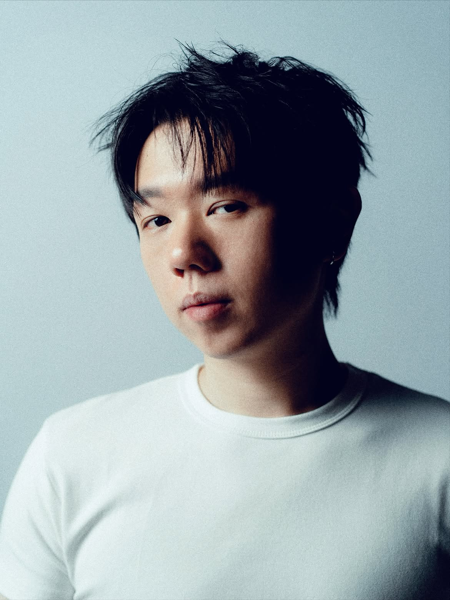
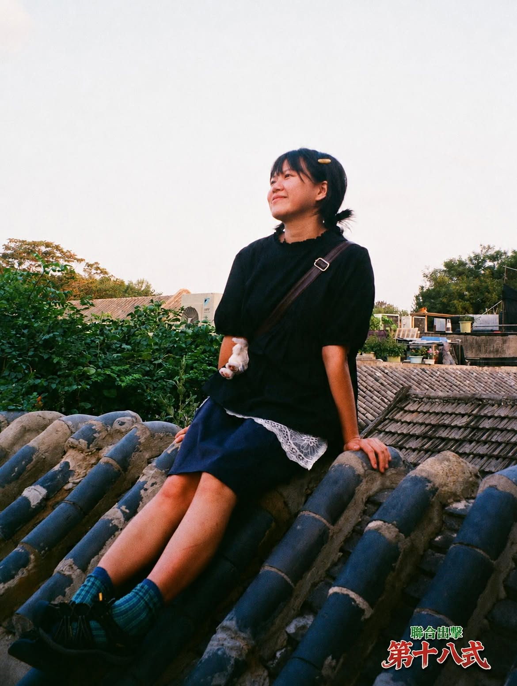
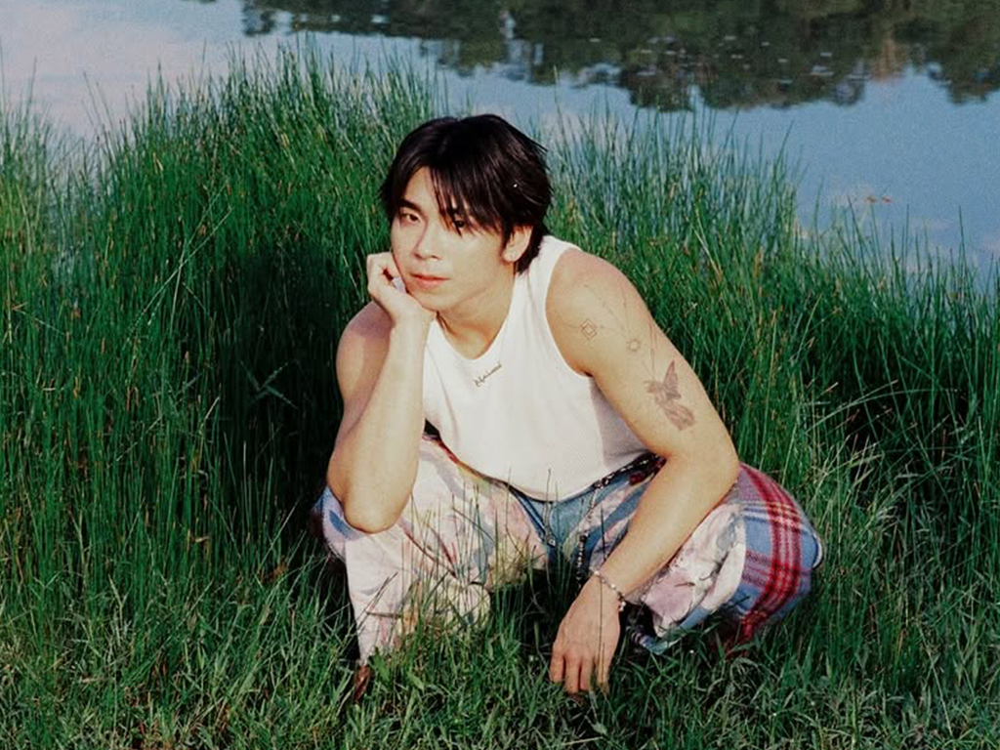
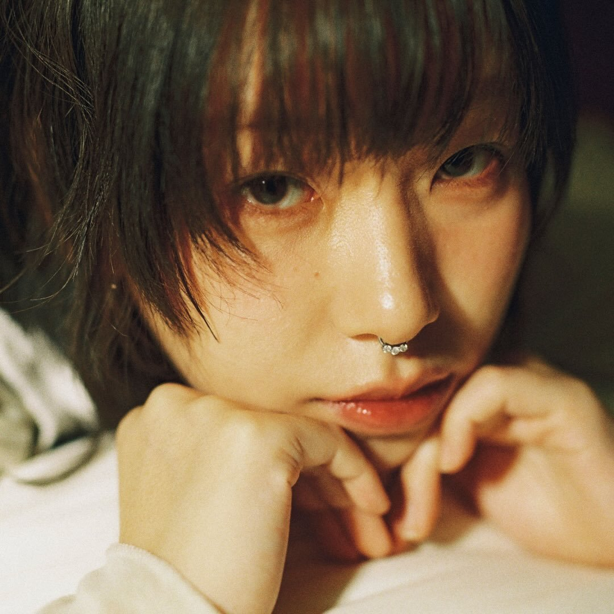
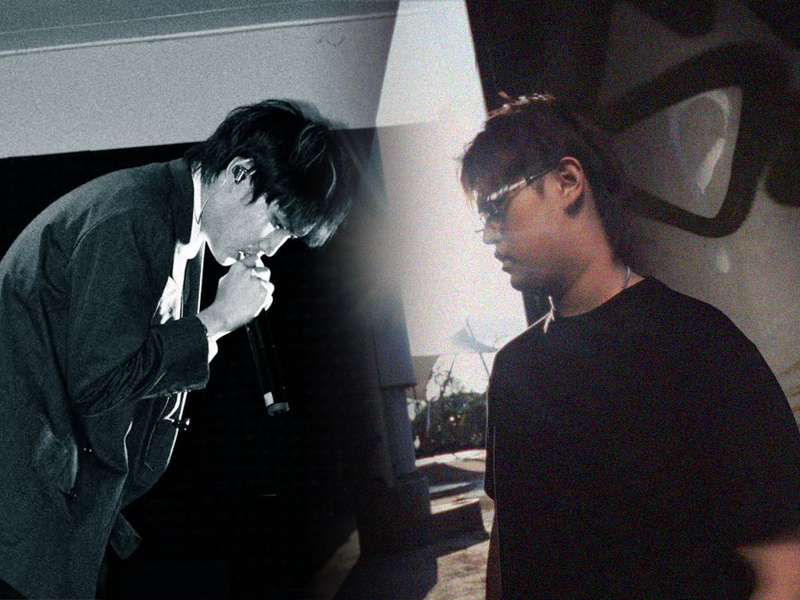

最新文章
VOL.07 NO.1 — 2026.08.05
Zoey Mong
用音樂捕捉記憶裡閃爍的天真碎片

VOL.06 NO.1 — 2026.07.30 Datboirg 比夏天熾熱的是滾燙的情感
VOL.04 NO.1 — 2026.07.23 鄭伊晴 "我是伊晴，愛好是追男孩子" 追男孩子 聯合出擊 ec.rise 動態度 暈船 我的喜歡不想轉彎 月光啊請你幫我轉達 關於追男孩子這回事 輕輕 獨立音樂創作 勇敢 不轉彎
VOL.04 NO.1 — 2026.07.16 HOW1E “用雙脚觸摸天空，是因為相信自己能穩穩著陸” R&B Neo-Soul Jazz 首張個人專輯 Backflip 用雙腳觸摸天空 是因為相信自己能穩穩著陸 ANGEL? 守護天使 救我和你！ 救贖 靠近一點！ Judd Apatow Love SLOW DANCE！ 才知道！ 期待著你的訊息 心裡有一絲落寞我才知道 I KNOW！ 你想為你自己所流過的淚滴交代好一切 BACKFLIP！ IT'S ALRIGHT！ 不應該讓這混亂的世界告訴你應該要怎麼去愛 ANGEL? 救我和你！ 靠近一點！ SLOW DANCE！ 才知道！ I KNOW！ BACLFLIP！ IT’S ALRIGHT！
VOL.03 NO.1 — 2026.07.09 SONGNING 艷而不嬌的花朵 栗色紅髮 鼻環 烏克麗麗 花朵 只在盛開後墜落 烏雲背後是無盡的寂寞 你看過她綻放開花結果 你看她慢慢慢慢變脆弱 你看她一片一片在掉落 你看她被遺忘在角落 花開花落終有時 Couldn't be shouldn't maybe I wanna be wanna be really 野花 生命力
VOL.01 NO.02 — 2026.06.25 sunOceanus LIXIAN Featuring：在框架裡跳舞 Featuring 共創 花 至少 Datboirg 小鎮愛情故事2 太陽花 藏在flow裡的是向sun而生的野心 我將你缺席後的生活近況寫進歌詞裏你有聽見吧爸 直到那天飛蛾飛來徘徊 以爲是你回來 思念 姐姐結婚了 你當上外公了 VOL.01 NO.01 — 2026.06.18 Jayden T 用嘻哈訴説柔軟的親情 FRIENDS & FAMILY WHERE I BELONG 花 至少 Short Film 用最熟悉的語言說自己的故事 福建話 親情 友情 嘻哈沒有符合條件的文章